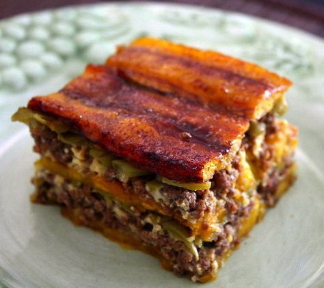

Venezuelan Style Pasticho
Maracaibo's Christmas Delight

This recipe is for as long I know is my favourite dish since I was a ki,
Derivated from the Italian style lasagna dish made this incredible meal
which taste can only be made attributed to the gods above.
Lasagna Style Dishes are know to be difficult to prepare but this meal is
the exception, it does require a bit of time but way less than usual alike
dishes. is cheap to make in caribbean countries and a great alternative
for a special dish for a birthday or any special ocasion. make it to your
family or maybe a hook up and I assure you their affection levels towards
you will go off the roof, now, let's get to it.
Ingredients:
- 10 Yellow Matured Plantain
- 1kg Grated Mozzarella Chesse
- Grated Parmisan Cheese
- 1kg Minced Meat
- 1 Onion
- 1 Handfull of Chives
- 1 Tomato
- 1 Green Bell Pepper
- 1/2 Red Bell Pepper
- Salt and Pepper
- Frying Oil
With all of these in hand, grab a cutting knife, cutting board, baking
trail and some tweezers and let's get to work.
Preparation:
- Cut all those veggies into small cubes
-
In a big pan add some oil and throw all those veggies to soft fry them
until onions are golden.
-
add your minced meat and combine them with your cooked veggies, salt and
pepper to your heart's desire. close your pan and let the meat release
all the juice, then remove the lid and let the juice zimmer down and
your meat is done.
-
Now cut all your plantain in long horizotal stripes, as you were trying
to make thick lasagna sheets out of those plantains make sure your
sheets are at least 1cm thick.
-
In a deep pan with generous frying oil, fry your plantain stripes until
that yellow turns into ambarish red.
-
When all of that is ready grab your baking trail and start setting the
lasagna with rotations in capes of plantain, meat, mozarella until trail
is top off.
-
On top add some mozarella and bake for 10min at medium heat so your
cheese gratinates.
And that's it! Now you can taste this creation of the gods, top each
serving with parmisan and enjoy this delightful meal.